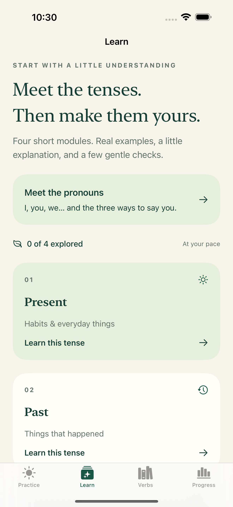
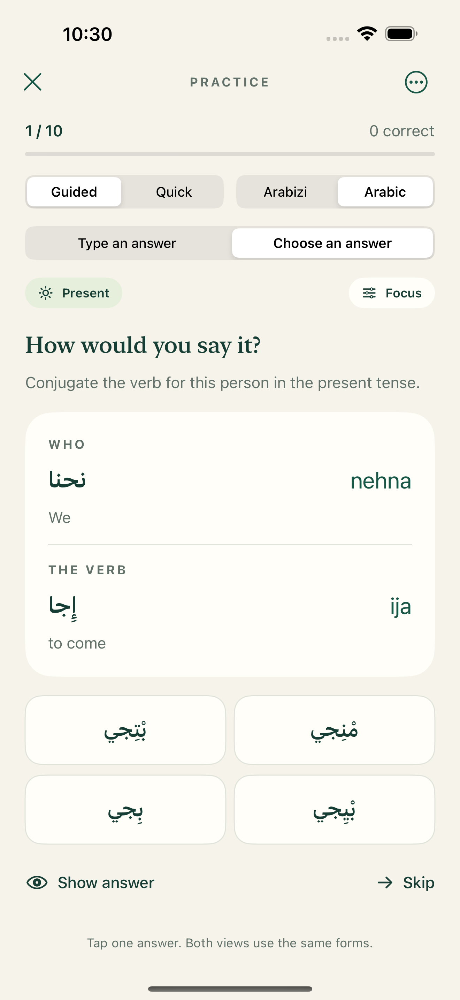
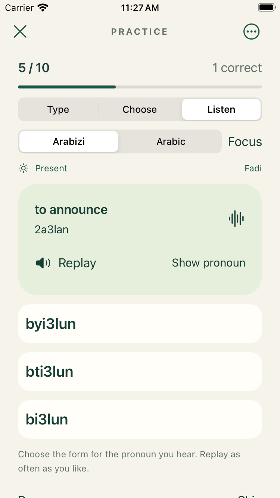
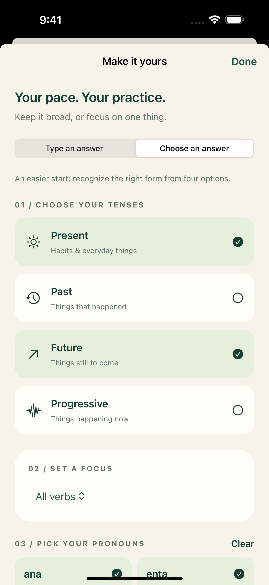

A little Lebanese, every day
Make yourself
at home in Arabic.
A few verb forms. A few minutes. A little more confidence. ShuFee helps you master Levantine verb conjugations through focused practice with Lebanese forms, in Arabic script or Arabizi.
For less than a NYC subway ride, make a little Lebanese part of your day.
U.S. app price: $1.99. Local App Store prices vary. One purchase, no subscription.Learn, then practice
Explore pronouns and four tense patterns. Start with answer choices or type from memory. Choose Guided for support or Quick for a compact practice session.
Lebanese, and part of the Levant
Lebanese is the everyday Arabic of Lebanon, part of the Levantine family also spoken in Syria, Jordan, and Palestine. Local words and pronunciation vary; ShuFee focuses on Lebanese forms.
A look inside
Find your way to fluent verb forms.
Learn a pattern, practice a conjugation, and build from there. Tap any screenshot for a closer look.
{kind=link}

Learn the patterns
2.0Explore short tense lessons and meet the Lebanese pronouns before you start practicing.
{kind=link}

Make it stick
2.0Choose an answer in Arabic or Arabizi, then try typing when you’re ready to recall forms yourself.
{kind=link}

Hear the difference
Coming in 2.1 · BetaHear a pronoun, choose its conjugation, and listen to the complete correct phrase. Replay whenever you need.
{kind=link}

Choose your focus
2.0Select tenses and pronouns for your next round. Visit Progress to see which forms need more attention.
Coming in 2.1 · Now in TestFlight
Hear it. Recognize it. Make it yours.
Our next update adds Lebanese pronunciation audio and a new way to practice by listening. These features are available in the 2.1 beta; they are not included in version 2.0.
Lebanese pronunciation, on tap
Listen to every verb form, all eight pronouns, full lesson phrases, and example sentences. Choose Fadi, Jasmine, or a mix of both. The audio uses AI-generated Lebanese voices and is included in the app for offline listening.
Listen. Choose. Keep going.
Hear a pronoun and select its conjugation from three choices. Hear “Sa7!” when correct or “ghalat” when wrong, followed by the complete correct phrase. The next question starts after the audio finishes.
Your focus, your pace
Select tenses, verbs, and pronouns. Replay the prompt, reveal a pronoun for help, or pause whenever you need. Listening accuracy and review are tracked separately from typing and multiple-choice practice.
A fuller verb collection
Version 2.1 expands the collection to 16 verbs and 512 conjugated forms across eight pronouns and four tense patterns: present, past, future, and progressive.
A little help.
Questions, a spelling suggestion, or something not working? Get in touch with Michael Kavalar, the creator of ShuFee.
Email ShuFee supportshufee.app@gmail.com · Include your app version, device model, and a brief description of the issue. Please avoid sending passwords or other sensitive information.
Where should I start?
Try Learn for short introductions to present, past, future, and progressive forms. Meet the pronouns explains distinctions such as masculine and feminine singular “you.” Practice includes a first-use overview that you can replay from the practice menu.
Can I practice without typing?
Yes. Select Choose an answer (Choose in 2.1) for multiple choice in either Arabic or Arabizi. Switch to typing when you want to recall the form yourself. Version 2.1 also adds Listen: hear a pronoun, then choose its conjugation.
How do I focus my practice?
Use Focus to select tenses and pronouns. Guided provides more explanation; Quick puts the pronoun and verb side by side. Progress and review help you return to forms that need attention.
How does pronunciation audio work in 2.1?
Tap Listen or the speaker icon beside a verb, pronoun, or lesson example. Press and hold for slower playback. Select Male (Fadi), Female (Jasmine), or Mixed under Learn or The little guide. Full lesson recordings include both the pronoun and verb. The same audio works with Arabic and Arabizi displays, and no internet connection or microphone access is needed.
How do I use Listen practice in 2.1?
In Practice, select Listen. The written pronoun stays hidden until you choose an answer or tap Show pronoun. Replay has no scoring penalty; revealing the pronoun marks your answer as assisted. Use Focus to select your material. Missed forms may return later in the round. Pause stops playback and automatic progression, and leaving the app pauses the round. In Mixed mode, one voice handles each question and its feedback.
Why do spellings sometimes look different?
Spellings follow Lebanese / Levantine conventions. Arabizi uses Latin letters and numbers and has no official spelling standard, so spellings can vary.
How much content is included?
Version 2.0 includes 96 forms across three verbs, eight pronouns, and four tense patterns. It is a focused verb-practice companion.
How do I turn off sounds or haptics?
Use the independent sound and haptic switches in the practice menu or The little guide. Practice sound effects respect your device’s Silent mode. In 2.1, pronunciation playback and Listen practice use spoken audio that can play with Silent mode on. Use Pause to stop a listening round.
Where is my progress?
Practice history, review items, lesson progress, and preferences are stored locally on your device. ShuFee does not provide its own account or cloud-sync service. Removing the app may remove this progress.
Your practice is yours.
ShuFee privacy policy
Updated September 13, 2026 · Applies to ShuFee 2.0 and 2.1 for iPhone and iPad.
Information in the app
ShuFee does not require an account and does not collect or transmit your practice answers, scores, lesson progress, or preferences to the developer. These records are saved locally using Apple’s device storage. The app contains no advertising or third-party analytics services.
Pronunciation audio in 2.1
Audio files are generated during app development and bundled with the app. Listening does not send your answers or other data to the voice provider. ShuFee does not record your voice or request microphone access.
Your choices
You can change sound and haptic preferences in the app. Removing the app removes its local data, subject to any backups managed by your device or Apple. Device backups and App Store purchases are governed by Apple’s services and privacy policies.
Support messages
If you email support, we receive the email address and information you choose to send. We use this information to respond to your request and resolve the issue. You can request deletion of support correspondence by contacting shufee.app@gmail.com, subject to any records we must retain.
This website
This support site uses no advertising, analytics scripts, or tracking cookies. It is hosted on GitHub Pages. GitHub may process technical information, such as IP addresses, to operate and secure its hosting service. See GitHub’s privacy statement. Following an external link or sending email is subject to the relevant service provider’s practices.
Children and changes
The app does not knowingly collect personal information from children. If a child sends personal information in a support message, contact us to request its deletion. Any changes to this policy will appear here with an updated effective date.
Contact
For privacy questions, email shufee.app@gmail.com.